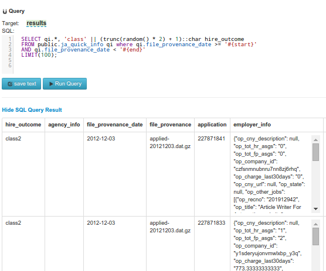
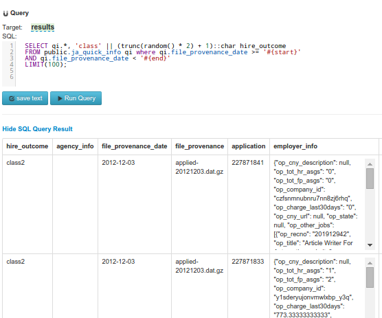
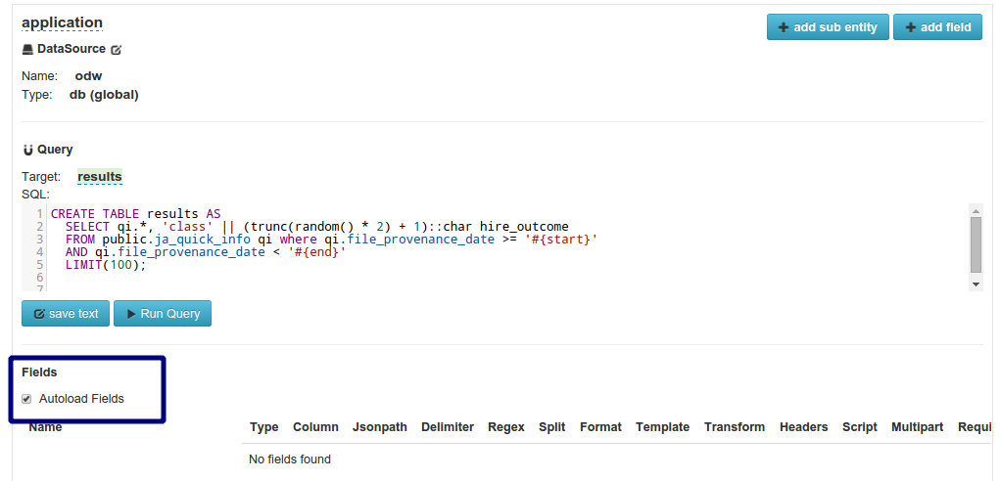
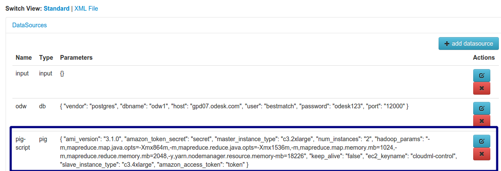
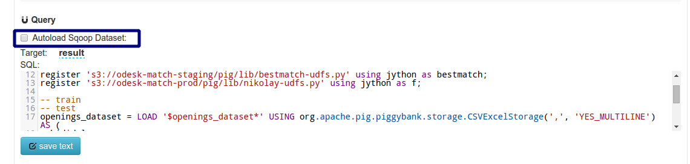
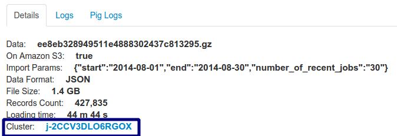
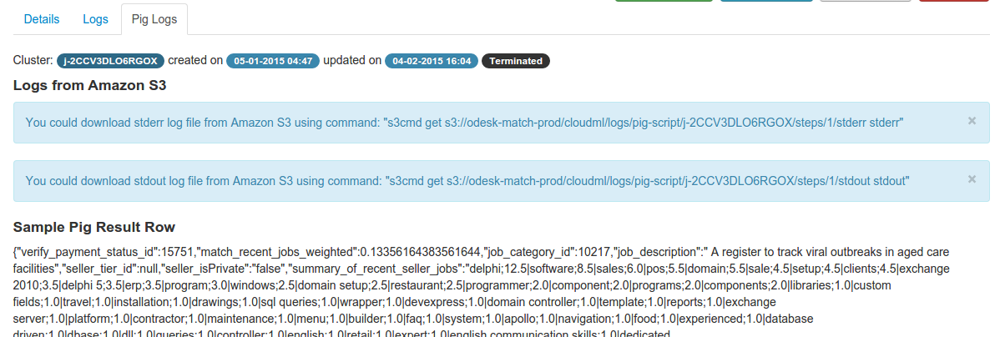

Importing the Data¶
Contents
Entities with DB DataSource¶
Testing the query¶
For database datasources you could run the entity’s sql query by clicking to “Run Query” button. In the dialog you will need specify datasource to be used, query parameter and count of the rows to display.
 

Autoload Fields¶
When you set “Autoload Fields” checkbox, the subentities and fields will be created in the importhandler automaticaly by analyzing sql query results row.
Working with Hadoop and Pig¶
To import data using Haddop and Pig:
Creating a pig datasource¶
Pig is a tool for analyzing large data sets based on Hadoop. Pig Latin is the language that allows querying and/or transforming the data. More details about Pig datasource parameters could be found in here
Creating entity with Pig datasource¶
In your entity set as datasource previously created pig datasource. In this case script parameter of the entity is required. Here is a sample of the entity’s script:
register 's3://odesk-match-staging/pig/lib/elephant-bird-core-4.4.jar';
register 's3://odesk-match-staging/pig/lib/elephant-bird-pig-4.4.jar';
register 's3://odesk-match-staging/pig/lib/elephant-bird-hadoop-compat-4.4.jar';
register 's3://odesk-match-staging/pig/lib/piggybank-0.12.0.jar';
openings_dataset = LOAD '$openings_dataset*' USING org.apache.pig.piggybank.storage.CSVExcelStorage(',', 'YES_MULTILINE') AS (
id:long, title:chararray, seller_skills:chararray
);
result = FOREACH openings_dataset GENERATE
*, f.text_union(title, seller_skills) as matched_title_skill;
More information about Pig Latin syntax could be find in the documentation.
Sqoop Import¶
If you want import the data from the database, you need also add Sqoop import. More details about Sqoop Import parameters could be found here.
You could also fill text field with valid SQL.
Autoload Sqoop Dataset¶
If you set Autoload Sqoop Dataset, system will automatically append sqoop dataset declaration before your entity script.
Please do not forgot to set name of sqoop dataset.
Autoload Fields¶
When you set “Autoload Fields” checkbox, the subentities and fields will be created in the importhandler automaticaly by analyzing results row.
Importing DataSet¶
Hadoop Pig script would be executed on separate cluster. Link to the cluster represented in dataset details page:
On Pig Logs tab of the dataset details could be found instructions how to download pig logs and other specific data:
Editing Raw Xml¶
To edit raw XML of the datasource you need to switch to the “XML File” view on the “Details” page. After clicking to the “Save” button your changes would be saved, if your changes in xml would be valid. Otherwise you will have an error message in the top of the page.